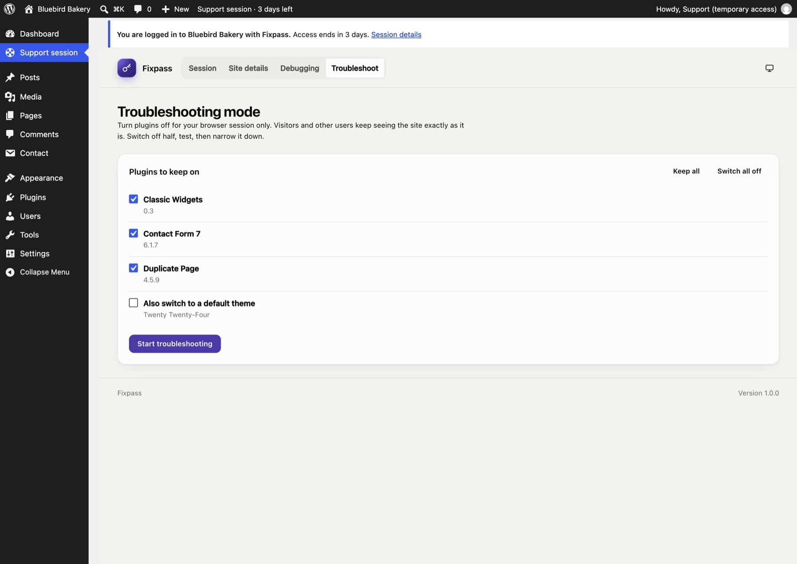

Troubleshooting mode
Troubleshooting mode lets support switch plugins off, or use a default theme, in their own browser only. Visitors and the site owner keep seeing the site exactly as it is. It's the standard way to find a plugin conflict without breaking a live site.
Only support, logged in with Fixpass, can use it (on the Support session page, Troubleshoot tab).
Use it#
- Under Plugins to keep on, untick the plugins to switch off. Keep all and Switch all off help.
- Optionally tick Also switch to a default theme.
- Click Start troubleshooting.
- Browse the site. The toolbar shows Troubleshooting mode while it's on.
- Change the selection and click Apply to narrow it down: switch off half, test, then the other half.
- Click Stop troubleshooting when you're done.

How it works#
Fixpass installs a small must-use plugin (wp-content/mu-plugins/fixpass-troubleshoot.php) while troubleshooting is in use. For requests carrying your troubleshooting cookie, it filters the list of active plugins (and the theme) before WordPress loads them. Nothing in the site's settings changes.
- It stops by itself after four hours, or when access ends if that's sooner.
- Fixpass itself always stays on.
- The must-use plugin is removed when no one is troubleshooting, and when Fixpass is deactivated or uninstalled.
If the wp-content/mu-plugins folder can't be written to, troubleshooting mode can't start, and Fixpass says so.
Still stuck? Check the FAQ, or ask on GitHub.